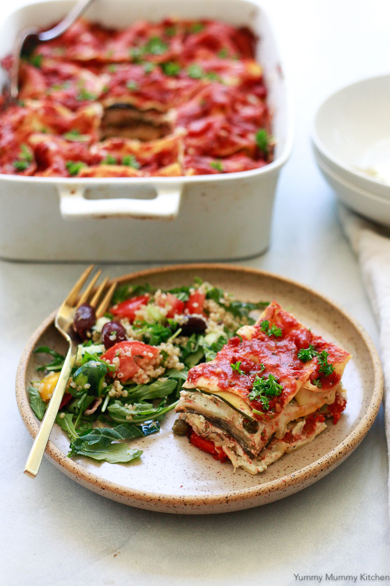

Vegan Lasagna

Ingredients
- 1 Medium Eggplant
- 1/4 Cup Olive Oil
- 1 Recipe Vegan Ricotta
- 1/2 Teaspoon Sea Salt
- 1 1/2 Teaspoons Truffle Oil
- 1/4 Cup Fresh Italian Parsley
- 25 Oz. Favorite Marinara
- 1 Medium Zucchini
- 1 (12 Oz.) Jar Fire Roasted Red Peppers
- 1 (9 Oz.) Box No-Boil Lasagna Noodles
Steps
- Preheat the oven to 400 degrees F.
- To cook the eggplant, mince two of the garlic cloves and stir into the olive oil. Brush both sides of eggplant slices with the garlic oil and season with salt and pepper. Heat a broiler or grill/grill pan to medium high. Cook, turning half way until tender, about 5-10 minutes. Add more oil if the eggplant gets dry. Remove from heat.
- I like this ricotta filling to have even more flavor, so to the linked vegan almond ricotta recipe, add an additional 1/2 teaspoon salt, 1 1/2 teaspoons truffle oil and 2 cloves peeled garlic. Blend in the blender until blended. Add the parsley and pulse just to chop. Mix the rest of the way with a rubber spatula.
- To assemble the lasagna, spread a thin layer of the marinara over the bottom of a 9x13-inch baking dish. Top with a layer of the prepared eggplant, raw zucchini, and red peppers. Lay a single layer of lasagna noodles over the vegetables. Spread 1/2 of the ricotta over the noodles. Top the ricotta with a layer of marinara, then more vegetables, noodles, the remaining ricotta, remaining vegetables, and last layer of noodles. Cover the noodles with the remaining marinara sauce. Cover with foil and bake for 60 minutes, until noodles are tender.